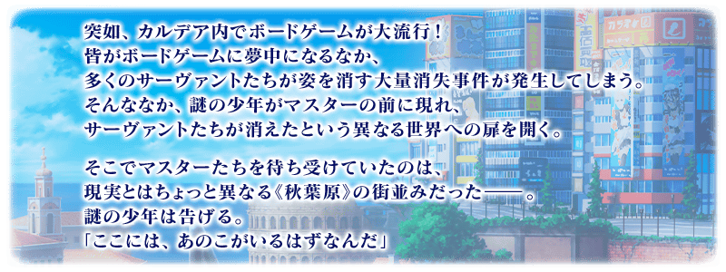
舉辦期間限定Fate/Requiem×Fate/Grand Order聯動活動「『Fate/Requiem』盤上遊戲默示錄」！
迦勒底的從者們被送到異世界。
為了救出他們開始了戰鬥！
本活動中進行主線關卡的話，活動限定從者「★4(SR)宇津見繪里世」將以期間限定暫時加入。
更加推進主線關卡，讓「★4(SR)宇津見繪里世」正式加入吧！
本活動中，挑戰多個桌上遊戲模樣關卡的話，會開放主線關卡。
桌上遊戲，可以配合主線關卡的進行享受多個種類。
在多個桌上遊戲勝利，救出消失的從者們吧！
※本頁面皆為開發中圖片。會有與實際圖片相異的情況。 ※一部份的關卡為後日開放。 ※請注意「★4(SR)宇津見繪里世」不會在通過活動舉辦後緊接開放的主線關卡階段中暫時加入。
◆活動舉辦期間◆
2020年5月25日(一) 19:00～6月8日(一) 11:59
◆活動參加條件◆
滿足以下條件的御主才能參加
・通過「特異點F 炎上汙染都市 冬木」
◆有關從者真名的注意◆
在2018年12月31日(二) 23:00以後新配信的主線故事及期間限定活動、一部份關卡、宣傳活動及召喚中，會顯示隱藏真名的對象從者真名。
※2018年12月31日(一) 22:59時點で、已經配信的主線故事、復刻活動、一部份關卡中不在此限。

※5月29日(五) 17:00修正

由於在『Fate/Grand Order 迦勒底放送局 輕量版 ～「Fate/Requiem」聯動活動舉辦記念放送～』達成7萬轉推，實施放送記念登入獎勵！
在下述期間中登入的話，贈送聖晶石12個。
◆領取期間◆
2020年5月26日(二) 3:00～6月2日(二) 2:59
上述期間中，在初次登入到「Fate/Grand Order」的時間點，贈予至禮物箱。
※期間內未登入的話無法領取。
※禮物只能領取1次。
◆贈送內容◆
聖晶石12個
◆贈送對象◆
2020年5月26日(二) 2:59前通過「特異點F 炎上汙染都市 冬木」的御主對象
※上述時間前，在管理室(ターミナル)畫面的關卡橫幅必須要有「CLEAR」的文字顯示。
在「Fate/Grand Order」官方網站內首頁及Gallery，公開了聯動活動「『Fate/Requiem』盤上遊戲默示錄」的電視廣告。敬請確認。
動畫製作：A-1 Pictures
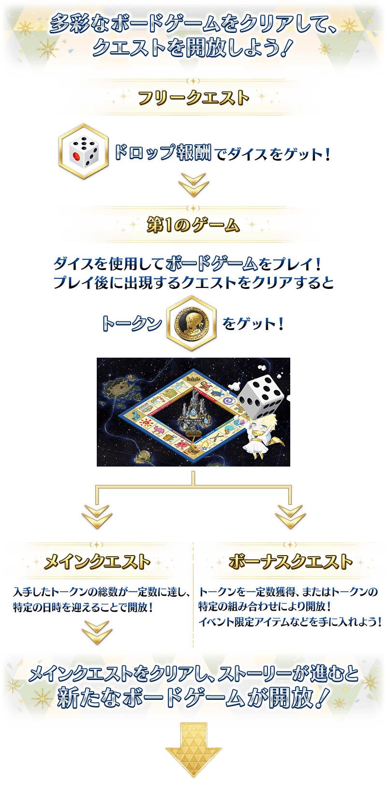 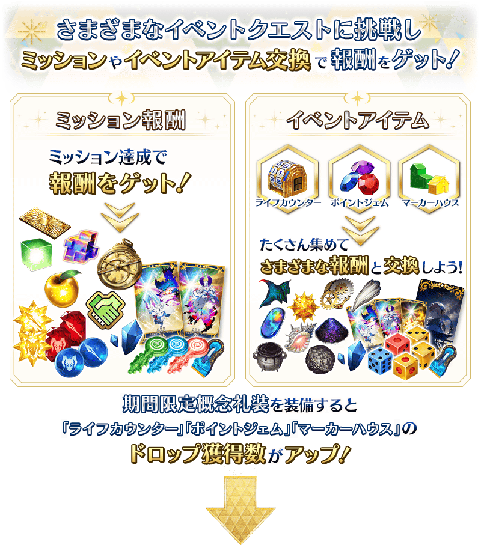
主線關卡的後記(エピローグ)為日後開放！
做為活動限定從者「★4(SR)宇津見繪里世」正式加入的後記為日後開放。
◆後記開放時間◆
2020年5月30日(六) 17:00～
進行故事的主線關卡會在下述的時間表及該時間點持有一定數籌碼後開放。
另外，推進主線關卡的話，會開放收集活動道具的自由關卡。
【關卡的舉辦期間】
| 關卡的種類 | 舉辦期間 |
|---|---|
| 序幕～第2個遊戲 自由關卡 |
2020年5月25日(一) 19:00～6月8日(一) 11:59 |
| 第3個遊戲～第4個遊戲 自由關卡 |
2020年5月27日(三) 17:00～6月8日(一) 11:59 |
| 第5個遊戲～最後的遊戲 自由關卡 |
2020年5月29日(五) 17:00～6月8日(一) 11:59 |
| 後記 | 2020年5月30日(六) 17:00～6月8日(一) 11:59 |
聯動活動「『Fate/Requiem』盤上遊戲默示錄」中最初可遊玩的第1個遊戲「大富翁」。
「大富翁」是使用可靠自由關卡入手的骰子來前進在地圖上格子的遊戲。
推進有20格的盤面，在格子停止的話會發生事件和關卡。
對應各格子的關卡會發生在地圖中央的地點，通過後可獲得「籌碼」。
獲得「籌碼」一定數後會開放主線關卡，獲得「籌碼」一定數或組合特定的「籌碼」，會開放加成關卡。
※活動期間結束後「籌碼」會消失。
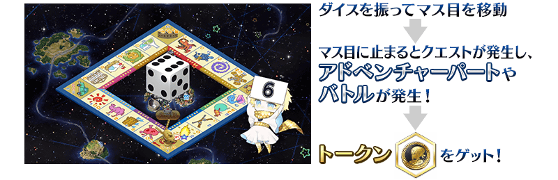
【格子的看法】
在大富翁的格子，會顯示剩餘的關卡次數和可獲得的「籌碼」。
參考格子的情報，使用可限定骰數的骰子來操控停止的格子，更有效率地推進關卡吧！
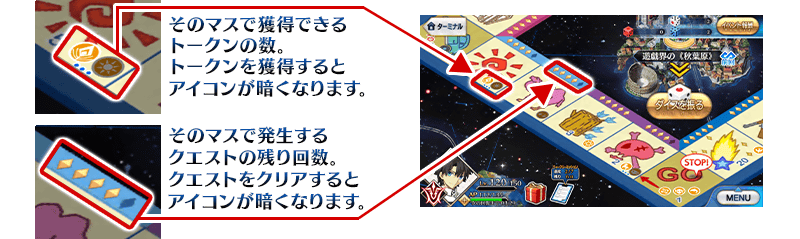
【骰子的種類】
可靠自由關卡入手的骰子，有著效果各自不同的種類。
由於也會有可限定骰數的種類，有效地使用來推進活動吧！
| 骰子的種類 | 效果 | |
|---|---|---|
| 普通骰子 | 前進1～6格 | |
| 123骰子 | 前進1～3格 | |
| 456骰子 | 前進4～6格 | |
| 純1骰子 | 必定前進1格 | |
| 純2骰子 | 必定前進2格 | |
| 純3骰子 | 必定前進3格 | |
透過獲得一定數籌碼或組合特定籌碼會發生加成關卡！
通過加成關卡的話，可得到指令紋章等的特別報酬。
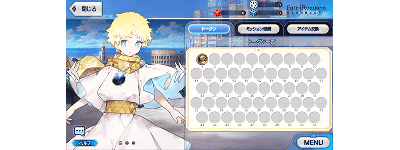
【加成關卡一覧】
| 關卡名 | 通過報酬 | |
|---|---|---|
| 加成關卡1 |

|
睿智的猛火ALL★4(SR) 10張 |
| 加成關卡2 |
|
睿智的猛火ALL★4(SR) 20張 |
| 加成關卡3 |

|
500萬QP |
| 加成關卡4 |
|
500萬QP |
| 加成關卡5 |
|
500萬QP |
| 加成關卡6 |

|
魔力稜鏡 200個 |
| 加成關卡7 |
|
魔力稜鏡 200個 |
| 加成關卡8 |
|
魔力稜鏡 200個 |
| 加成關卡9 | 【活動限定指令紋章】 ★3(R)淡青き尸者の令印 |
|
| 加成關卡10 | 【活動限定指令紋章】 ★4(SR)星の海の航海証 |
|
| 加成關卡11 | 【活動限定指令紋章】 ★5(SSR)ヴィヴ・ラ・フランス |
|
| 加成關卡12 | 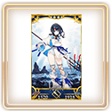 | ★4(SR)宇津見繪里世【寶具強化用】 |
| 加成關卡13 | ★4(SR)宇津見繪里世【寶具強化用】 | |
| 加成關卡14 | ★4(SR)宇津見繪里世【寶具強化用】 | |
| 加成關卡15 | ★4(SR)宇津見繪里世【寶具強化用】 | |
| 超級加成關卡 |
|
1,000萬QP |

聯動活動「『Fate/Requiem』盤上遊戲默示錄」中會發生達成「收集特定的道具一定數以上」「通過加成關卡」等各式各樣條件的話，可獲得豪華報酬獲得的任務！
另外，對應任務的達成狀況會開放新的任務。
通過任務，獲得各式各樣的達成報酬吧！
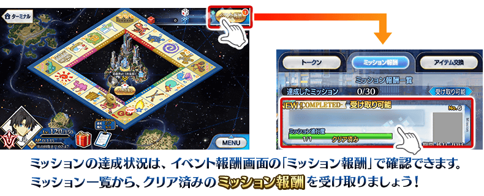
※請注意光滿足通過條件無法入手報酬。 ※請注意未領取任務報酬的話，不會開放新的任務。

【5月30日(六) 17:00追記】
以通過聯動活動「『Fate/Requiem』盤上遊戯默示錄」後記、超級加成關卡及「終局特異點」的御主做為對象，開放高難易度的「挑戰關卡」。
「挑戰關卡」就算通過後也不會消失，可變更從者和概念禮裝的組合等後無數次挑戰。
※關卡通過報酬、戰利品、御主EXP、魔術禮裝EXP、絆點數只可在初次通過時獲得。
◆挑戰關卡開放時間◆
2020年5月30日(六) 17:00～
◆挑戰關卡參加條件◆
滿足以下條件的御主才能參加
・通過聯動活動「『Fate/Requiem』盤上遊戯默示錄」的後記
・通過聯動活動「『Fate/Requiem』盤上遊戯默示錄」的超級加成關卡
・通過「終局特異點」
◆挑戰關卡初次通過報酬◆
傳承結晶 1個
超值攻略方法・其1
本活動的期間中，強化「★4(SR)宇津見繪里世」時的獲得經驗值變成2倍。
是讓成為活動加成對象的「★4(SR)宇津見繪里世」等級一口氣上升的機會！
◆舉辦期間◆
2020年5月25日(一) 19:00～6月8日(一) 11:59
超值攻略方法・其2
本活動的期間中，下表從者在本活動的活動關卡中會得到自身的攻擊威力提升與絆點數獲得量提升的加成！
強化對象從者，向活動挑戰吧！
※活動加成的效果量因從者而異。 ※瑪琇・基利艾拉特「絆點數獲得量提升」效果，是所謂「我方全體含候補的絆點數獲得量提升」的效果。支援時此效果無效。
【活動加成的效果量與對象從者】
| 自身的攻擊威力 | 絆點數 獲得量 |
職階 | 稀有度 | 從者名 |
|---|---|---|---|---|
| ＋100% | 只限 ＋50% |
Lancer | ★★★★ | 宇津見繪里世 |
| Berserker | ★★★★ | 鬼女紅葉 | ||
| Foreigner | ★★★★★ | Voyager | ||
| ＋50% | 只限 ＋20% |
Archer | ★★★★ | Emiya〔Alter〕 |
| Rider | ★★★★ | 瑪莉・安東尼 | ||
| Caster | ★★★★ | 湯瑪斯・愛迪生 | ||
| ★★★★ | 童謠 | |||
| 我方全體 +5% |
Shielder | ★★★ | 瑪琇・基利艾拉特 | |
| ＋30% | 只限 ＋20% |
Archer | ★★★★ | 巴御前(Archer・地獄) |
| Caster | ★★★★ | 喀耳刻(俄刻阿諾斯的Caster) | ||
| ★ | 沃夫岡・阿瑪迪斯・莫札特 | |||
| Assassin | ★★★★★ | 刑部姬 | ||
| MoonCancer | ★★★★★ | 吉娜可＝加里吉利(偉大石像神) |
※就算成為對象從者也會有在本活動的主線劇本未登場的情況。 ※「★5(SSR)吉娜可＝加里吉利(偉大石像神)」為「★5(SSR)偉大石像神」靈基再臨到第2階段的話名稱會變成「★5(SSR)吉娜可＝加里吉利」。 ※自5月17日(日) 17:00，在從者選擇畫面和從者強化畫面等，追加活動加成篩選器。由於是只顯示於活動活躍從者的便利功能，敬請搭配活用。
超值攻略方法・其3
裝備活動限定概念禮裝與期間限定概念禮裝的話，在活動中會受到各式各樣的恩惠。
裝備可靠活動道具交換入手的活動限定概念禮裝「★5(SSR)見上げた空の星に」的話，在活動關卡中自身的攻擊威力會提升。
另外，裝備在聖晶石召喚Pick Up的期間限定概念禮裝「★5(SSR)ミッション･スタート」「★4(SR)トーナメント･スター」「★3(R)ミックス･ジュース」的話，活動道具「生命計數器」「分數寶石」「房屋標誌」各自的掉落獲得數會提升。
※請注意各關卡的道具掉落率並非100％。
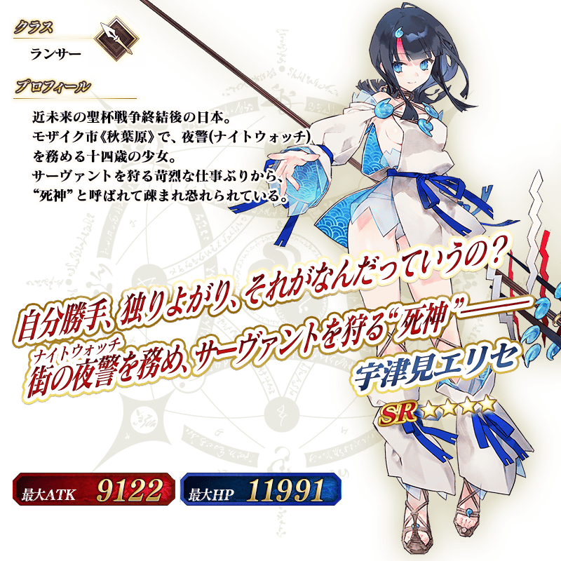
◆靈基再臨◆
使用能靠活動任務報酬入手的「遙遠冒險的渾天儀(遥かなる冒険のアストロラーベ)」，重複4次靈基再臨的話，卡面會有所變化！
※「★4(SR)宇津見繪里世」不會隨靈基再臨使戰鬥角色的外觀變化。
介紹「★4(SR)宇津見繪里世」的寶具演出！
在「Fate/Grand Order」官方網站內的公告中，以影片公開寶具演出，敬請確認。

活動道具可自點擊管理室(ターミナル)畫面右上「活動報酬」鍵所顯示的「活動道具交換」畫面，交換以下的道具。
※關於英靈結晶・流星之芙芙ALL★4(HP)、英靈結晶・日輪之芙芙ALL★4(ATK)，會在通過5月30日(六)開放的本活動後記後才能交換。 ※「各種骰子」在活動期間結束後可交換成QP。
◆交換期間◆
2020年5月25日(一) 19:00～6月15日(一) 11:59
※活動道具交換期間結束後「生命計數器」「分數寶石」「房屋標誌」「各種骰子」會消失。
◆能用生命計數器交換的道具◆
|
【活動限定概念禮裝】 【技能強化＆靈基再臨素材】 【靈基再臨素材】 【其他道具】 |
◆能用分數寶石交換的道具◆
|
【活動限定概念禮裝】 【技能強化＆靈基再臨素材】 【靈基再臨素材】 【其他道具】 |
◆能用房屋標誌交換的道具◆
|
【活動限定概念禮裝】 【技能強化＆靈基再臨素材】 【其他道具】 |
|
★★★★★SSR |
|
【活動限定】 |
|
★★★★SR |

|
★★★R |
介紹在2020年5月22日(五)的維修後反映的更新內容之中代表性的內容。
◆追加時間◆
2020年5月22日(五) 17:00
個人空間(マイルーム)中修改成可以不顯示全UI
個人空間(マイルーム)中變得可從顯示切替鍵不顯示全UI。
因此，變得能以個人空間(マイルーム)背景無UI的狀態截圖從者。
與顯示UI時同様地點擊從者附近後能播放語音。
透過本次的修改，畫面移動變得如下述。
1.點擊「顯示切替」鍵的話畫面右側的UI變得不顯示。 2.再點擊「顯示切替」鍵的話全UI變得不顯示。 3.點擊畫面端或滑動畫面的話變得只會顯示背景。 4.再點擊畫面或滑動畫面的話會返回平常的顯示。
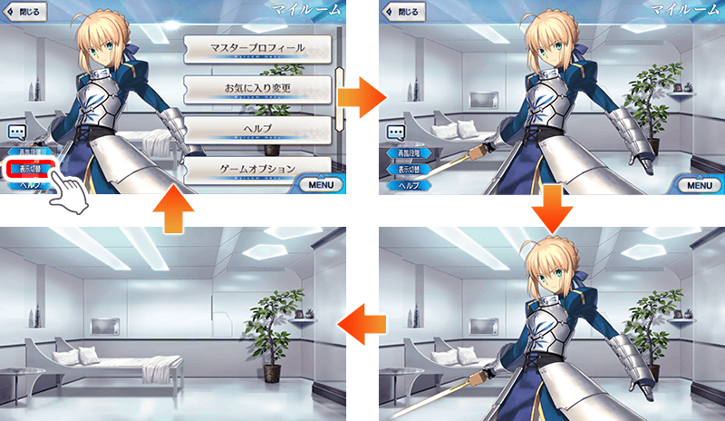
在隊伍確認畫面修改成可確認關卡情報
在隊伍確認畫面中修改成可確認出現敵人和戰利品等的關卡情報。
關卡情報可從隊伍確認畫面的「i」鍵確認。
另外，「幫助」鍵同時變更成「?」鍵。
※顯示的み的變更となります。
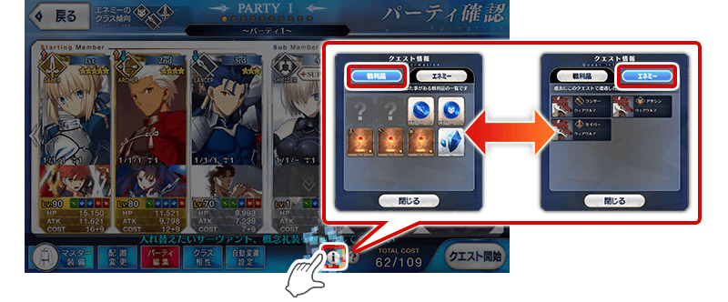
修改成一目了然上次有施行自由關卡的地點
在有自由關卡的地點顯示的標記下方，追加了解上次施行關卡的「前回」顯示。
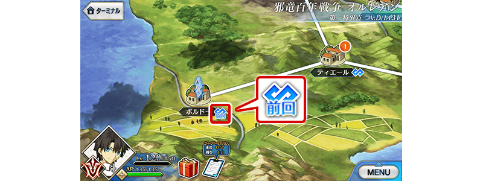
其他還有，期間限定「Fate/Requiem聯動活動Pick Up召喚」同時舉辦！
關於詳情，請自下述橫幅確認。